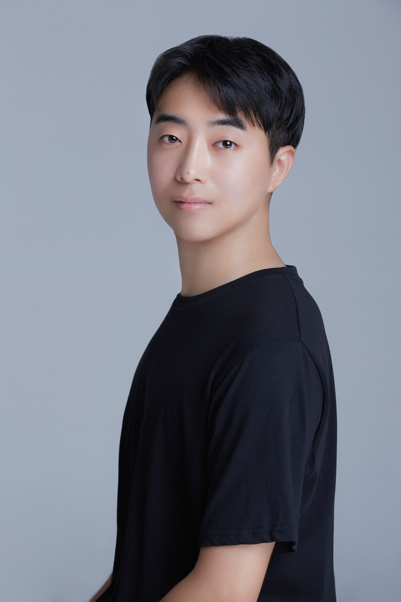

Beomjin Seo
AI Research Engineer
서범진 · Seoul, Republic of Korea
I build and study large-scale models, with a focus on training and evaluating on-device LLMs and LMMs. My work spans efficient multi-node pretraining, vision–text multimodal learning, and post-training from supervised fine-tuning to reinforcement-learning variants. I care about making capable models small and efficient enough to run where people actually use them.
Projects
LLM Pretraining for Efficient On-device Model
Mar 2026 – Present- Experimented with efficient training setups in multi-node GPU environments.
- Ran distributed-training experiments using Megatron-LM.
LMM Pretraining for On-device Model
Jan 2026 – Present- Jointly trained and experimented with vision and text modalities.
- Proposed a training methodology that accounts for quantization.
LLM Post-training: from SFT to RL Variants
Mar 2025 – Dec 2025- Ran experiments spanning SFT for large-scale models to RLVR and OPD-style methods.
Binding Affinity Prediction using Graph Neural Networks with Attention
May 2020 – Aug 2020- As main researcher, developed a graph attentional model to predict binding affinity between proteins and ligands; it outperformed other ML-based baselines.
- Provided a visual explanation via attention maps, confirming the model focused on biologically meaningful binding positions.
Work Experience
Samsung Research — Full time
AI Core Team · Engineer
- Training & Evaluating LLMs: trained LLMs and LMMs on multi-node GPUs, evaluated across multiple benchmarks, and ran post-training (data-mix strategies, synthetic-data generation pipelines, agentic model development via RLVR and OPD-style methods).
- Semantic Deep Search for TV manuals: prepared domain-specific datasets, trained task-specific deep-search models, and compressed model weights.
Kim Jaechul Graduate School of AI at KAIST — Intern
Research Intern, Edward's Lab (mentor: Prof. Edward Choi)
- Developed a multimodal dataset from Wikipedia and ran a proof-of-concept with it.
KIST Europe — Intern
Research Intern, Smart Convergence Group (mentor: Dr. Sangrak Lim) · Saarbrücken, Germany
- Worked on QSAR model development and molecular docking using graph attentional network models.
Education
Kyung Hee University
B.S. in Software Convergence & Biomedical Engineering · GPA 4.1 / 4.5
CV
Curriculum Vitae
Full résumé — updated June 2026 (PDF).